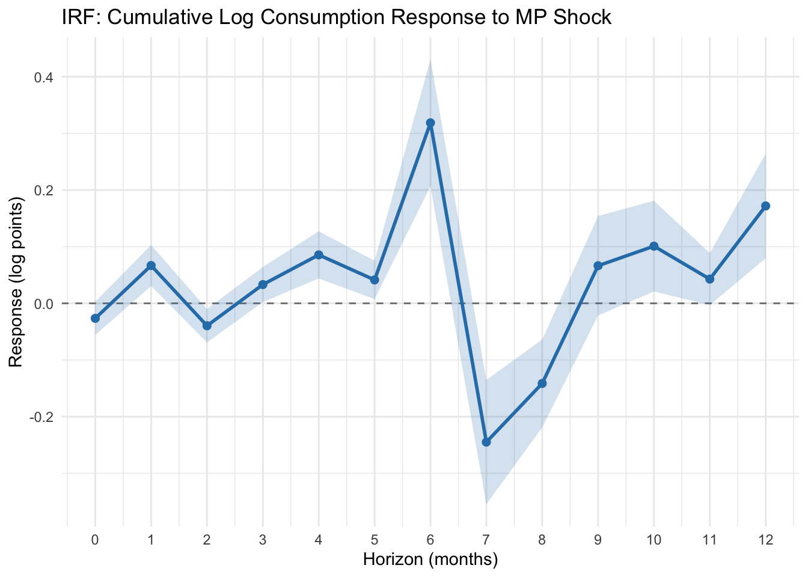
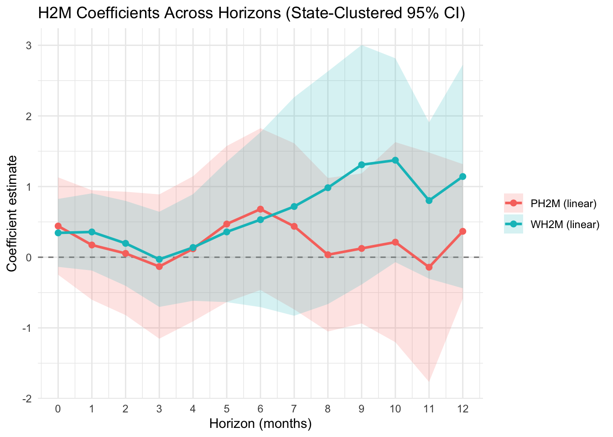

library(dplyr)
library(tidyr)
library(ggplot2)
library(lmtest)
library(sandwich)IRF Diagnostics and Re-Estimation
Objective
Re-check the previous IRF specification and re-estimate local projections using:
- only months with full state coverage and non-missing required variables,
- state-clustered standard errors,
- cumulative log consumption response to improve scaling and interpretation.
Libraries
Data and sample construction
base <- read.csv("aggregate_state_monthly_shock_h2m.csv") |>
mutate(
year_month = as.character(year_month),
year = as.integer(year),
month_num = as.integer(month_num),
uf_code = as.integer(uf_code),
date = as.integer(date)
) |>
arrange(uf_code, date)
n_states <- base |>
distinct(uf_code) |>
nrow()
full_months <- base |>
group_by(date) |>
summarize(
n_states_present = n_distinct(uf_code),
all_complete = all(
!is.na(consumption_index) &
!is.na(mp_shock) &
!is.na(share_PH2M_linear) &
!is.na(share_WH2M_linear)
),
.groups = "drop"
) |>
filter(n_states_present == n_states, all_complete) |>
pull(date)
panel <- base |>
filter(date %in% full_months) |>
group_by(uf_code) |>
arrange(date, .by_group = TRUE) |>
mutate(
log_c = log(consumption_index),
lag_log_c = lag(log_c, 1),
lag_mp_shock = lag(mp_shock, 1)
) |>
ungroup()
sample_info <- tibble(
n_states = n_states,
n_full_months = length(full_months),
min_full_month = min(full_months),
max_full_month = max(full_months)
)
sample_info# A tibble: 1 × 4
n_states n_full_months min_full_month max_full_month
<int> <int> <int> <int>
1 27 22 686 707Local projection setup
Model at each horizon \(h \in \{0,\dots,12\}\):
\[ y_{i,t+h} - y_{i,t-1} = \beta_h \cdot \text{mp\_shock}_{i,t} + \gamma_h'X_{i,t} + \alpha_i + \delta_m + \tau_y + \varepsilon_{i,t+h} \]
where:
- \(y_{i,t} = \log(\text{consumption index}_{i,t})\),
- \(X_{i,t}\) includes
share_PH2M_linear,share_WH2M_linear,lag_log_c,lag_mp_shock, share_Ricardian_linearis omitted to avoid exact collinearity,- standard errors are clustered by state (
uf_code).
horizons <- 0:12
safe_get <- function(ct, term) {
if (!term %in% rownames(ct)) return(c(NA_real_, NA_real_))
c(unname(ct[term, "Estimate"]), unname(ct[term, "Std. Error"]))
}
run_lp_cluster <- function(h) {
d <- panel |>
group_by(uf_code) |>
arrange(date, .by_group = TRUE) |>
mutate(
y_lead = lead(log_c, h),
y_resp = y_lead - lag_log_c
) |>
ungroup() |>
filter(!is.na(y_resp), !is.na(lag_log_c), !is.na(lag_mp_shock))
use_month_fe <- n_distinct(d$month_num) > 1
use_year_fe <- n_distinct(d$year) > 1
rhs <- c(
"mp_shock",
"share_PH2M_linear",
"share_WH2M_linear",
"lag_log_c",
"lag_mp_shock",
"factor(uf_code)"
)
if (use_month_fe) rhs <- c(rhs, "factor(month_num)")
if (use_year_fe) rhs <- c(rhs, "factor(year)")
fml <- as.formula(paste("y_resp ~", paste(rhs, collapse = " + ")))
m <- lm(fml, data = d)
Vcl <- vcovCL(m, cluster = ~ uf_code, type = "HC1")
ct <- coeftest(m, vcov. = Vcl)
mp <- safe_get(ct, "mp_shock")
p2 <- safe_get(ct, "share_PH2M_linear")
w2 <- safe_get(ct, "share_WH2M_linear")
tibble(
horizon = h,
n_obs = nobs(m),
beta_mp = mp[1],
se_mp_cl = mp[2],
lo95_mp_cl = beta_mp - 1.96 * se_mp_cl,
hi95_mp_cl = beta_mp + 1.96 * se_mp_cl,
beta_ph2m = p2[1],
se_ph2m_cl = p2[2],
lo95_ph2m_cl = beta_ph2m - 1.96 * se_ph2m_cl,
hi95_ph2m_cl = beta_ph2m + 1.96 * se_ph2m_cl,
beta_wh2m = w2[1],
se_wh2m_cl = w2[2],
lo95_wh2m_cl = beta_wh2m - 1.96 * se_wh2m_cl,
hi95_wh2m_cl = beta_wh2m + 1.96 * se_wh2m_cl
)
}
irf_results_cluster <- bind_rows(lapply(horizons, run_lp_cluster))
write.csv(
irf_results_cluster,
"irf_lp_logcum_linear_h2m_clustered_fullmonths.csv",
row.names = FALSE
)
irf_results_cluster# A tibble: 13 × 14
horizon n_obs beta_mp se_mp_cl lo95_mp_cl hi95_mp_cl beta_ph2m se_ph2m_cl
<int> <int> <dbl> <dbl> <dbl> <dbl> <dbl> <dbl>
1 0 567 -0.0265 0.0150 -0.0558 0.00285 0.441 0.351
2 1 540 0.0667 0.0185 0.0305 0.103 0.173 0.395
3 2 513 -0.0395 0.0151 -0.0692 -0.00993 0.0539 0.446
4 3 486 0.0332 0.0158 0.00222 0.0641 -0.132 0.521
5 4 459 0.0856 0.0213 0.0439 0.127 0.119 0.524
6 5 432 0.0414 0.0173 0.00745 0.0753 0.470 0.563
7 6 405 0.319 0.0571 0.207 0.431 0.680 0.584
8 7 378 -0.245 0.0560 -0.355 -0.135 0.437 0.600
9 8 351 -0.141 0.0396 -0.219 -0.0637 0.0351 0.554
10 9 324 0.0664 0.0448 -0.0214 0.154 0.124 0.541
11 10 297 0.101 0.0409 0.0208 0.181 0.213 0.722
12 11 270 0.0428 0.0234 -0.00307 0.0887 -0.142 0.828
13 12 243 0.172 0.0471 0.0796 0.264 0.367 0.485
# ℹ 6 more variables: lo95_ph2m_cl <dbl>, hi95_ph2m_cl <dbl>, beta_wh2m <dbl>,
# se_wh2m_cl <dbl>, lo95_wh2m_cl <dbl>, hi95_wh2m_cl <dbl>Plot: MP shock IRF with clustered 95% CI
p_mp <- irf_results_cluster |>
ggplot(aes(x = horizon, y = beta_mp)) +
geom_hline(yintercept = 0, linetype = "dashed", color = "gray50") +
geom_ribbon(aes(ymin = lo95_mp_cl, ymax = hi95_mp_cl), alpha = 0.2, fill = "#2C7FB8") +
geom_line(color = "#2C7FB8", linewidth = 1) +
geom_point(color = "#2C7FB8", size = 2) +
scale_x_continuous(breaks = 0:12) +
labs(
title = "IRF: Cumulative Log Consumption Response to MP Shock",
x = "Horizon (months)",
y = "Response (log points)"
) +
theme_minimal()
p_mp
ggsave("irf_mp_shock_clustered_fullmonths_logcum.png", p_mp, width = 8, height = 5, dpi = 300)Plot: H2M coefficients with clustered 95% CI
coef_h2m <- irf_results_cluster |>
select(
horizon,
beta_ph2m, lo95_ph2m_cl, hi95_ph2m_cl,
beta_wh2m, lo95_wh2m_cl, hi95_wh2m_cl
) |>
pivot_longer(cols = -horizon, names_to = "term", values_to = "value") |>
mutate(
series = case_when(
grepl("ph2m", term) ~ "PH2M (linear)",
grepl("wh2m", term) ~ "WH2M (linear)",
TRUE ~ NA_character_
),
stat = case_when(
grepl("^beta", term) ~ "beta",
grepl("^lo95", term) ~ "lo95",
grepl("^hi95", term) ~ "hi95",
TRUE ~ NA_character_
)
) |>
select(horizon, series, stat, value) |>
pivot_wider(names_from = stat, values_from = value)
p_h2m <- coef_h2m |>
ggplot(aes(x = horizon, y = beta, color = series, fill = series)) +
geom_hline(yintercept = 0, linetype = "dashed", color = "gray50") +
geom_ribbon(aes(ymin = lo95, ymax = hi95), alpha = 0.18, color = NA) +
geom_line(linewidth = 1) +
geom_point(size = 2) +
scale_x_continuous(breaks = 0:12) +
labs(
title = "H2M Coefficients Across Horizons (State-Clustered 95% CI)",
x = "Horizon (months)",
y = "Coefficient estimate",
color = NULL,
fill = NULL
) +
theme_minimal()
p_h2m
ggsave("irf_h2m_coefficients_clustered_fullmonths_logcum.png", p_h2m, width = 8, height = 5, dpi = 300)Notes on diagnostics
- The previous unstable pattern was mainly a scaling issue from using levels directly.
- This re-specification uses cumulative log responses, which are comparable across horizons.
- Sample is short (22 balanced months), so horizon-specific estimates can still be volatile at longer horizons.